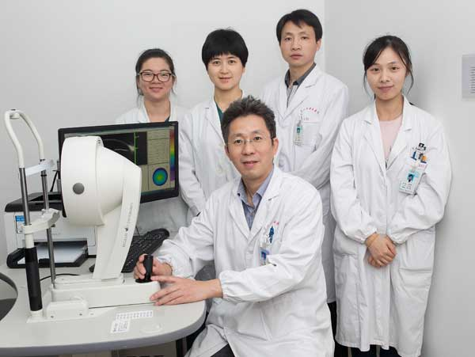

嘉兴市中医医院始建于1959年，是嘉兴市属集医疗、教学、科研、康复保健为一体的综合性、现代化的国家级三级甲等中医医院。系国家重点建设中医院，浙江省文明单位，浙江省中医名院建设单位，浙江省首批“绿色医院”和“健康促进医院”，是国际紧急救援中心网络医院，为浙江中医药大学附属医院，以及省内外多所高等医学院校教学医院。
1942年邵传统先生在张家弄（原勤俭路中段）开设邵氏眼科诊所。1956年成立联合诊所创立中医院眼科。1995年9月，被省卫生厅确定为“浙江省中医眼底病治疗建设基地”。 1997年10月，眼科“浙江省中医眼底病基地”建设通过浙江省中医管理局及专家组的中期评估。2000年1月，眼底病基地建设通过省内外专家验收，经省卫生厅审核批准，并挂牌“浙江省中医临床眼底病医疗中心”。2005年3月，成立眼科中心暨近视眼激光治疗中心,市卫生局严吉丹副局长和眼科创始人邵传统先生为两个中心的成立揭牌。2007年12月，被列为国家中医药管理局“十一五”重点专科建设项目。
经过几代人近半个世纪的努力，眼科已经建成为浙北地区最具规模和最有影响的眼科，为浙江省中医临床眼底病医疗中心，国家级重点建设学科。目前拥有专科门诊近400平方米、独立的近视激光治疗中心、2个病区、2个独立的千级层流手术室，专科设备超千万元。
我科在多个眼科领域，尤其是眼底病、眼表疾病等领域，运用中医理论，采用中医中药方法，如中药内服或外敷、中药电离子导入、中药穴位注射、中药熏蒸、针灸等。科室拥有良好的人才梯队，并且聘请国家级名中医定期来我院坐诊，对骨干人才进行代教，使我科在中医中药这一传统治疗领域达到了一个新的高度。
随着学科建设日益完善，眼科形成了“专科、专病、专人、专治”的诊疗特色。目前，该科开设屈光专科、白内障专科、眼底病专科、小儿斜视弱视专科，青光眼专科，眼表泪道专科，眼眶病及眼部整形专科等七大专科组。开展各类眼科手术。使广大患者在嘉兴本地就可享受到眼病全方位诊断和治疗。